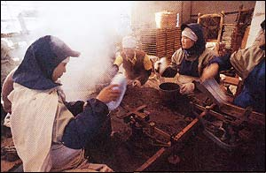

PUERH TEA
Often said to be a form of black tea, Puerh is actually a
distinct tea variety, unique for several reasons... beginning with the
fact that it is named for a place that does not grow tea: Puerh county
in southwest China's Yunnan province. It is, in fact, the mountains
surrounding Puerh county which supply the leaves processed into Puerh
tea. The second unusual aspect of this tea is its method of production
- which includes a unique stage of genuine fermentation. (This method
of manufacture does not apply to green Puerh varieties - which are dried
without fermentation. Their flavor develops more slowly through many
years of natural oxidation.) Fermentation is responsible not only for
the mellow, earthy flavor of Puerh tea, but also for its widely acknowledged
medicinal properties, and the fact that rather than becoming stale and
tasteless as it ages, its flavor actually develops and improves- meaning
that, like a fine wine it can be aged 10, 20, 50 years or more.

STEAM PRESSING
PUERH TEA, Yunnan Province
CLOSE
WINDOW